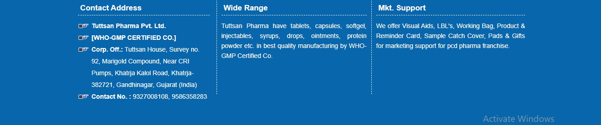

Tuttsan Pharma Pvt. Ltd., is a WHO-GMP Certified Company involved in product of wide range of products covering all areas of complaint and forms Tuttsan Pharma Pvt. Ltd. is stepping towards the success with your cooperation & support. We strive for effective cost operation and effectiveness so as to remain encyclopedically competitive. To be among the top 50 Indian Pharmaceutical Companies. Tuttsan Pharma Pvt. Ltd. was Established by the devoted sweats put by a platoon of professionals with strong determination to serve Humanity We strive to come a knowledge driven pharmaceutical company with loftiest position of functional excellence in all spheres of life. Our core trials are to add value to guests and maximize the strength of client connections.
Tuttsan Pharma aims to deliver exploration grounded pharmaceutical products to our recognized guests. We've been furnishing affordable drugs that are of high quality.
Ethical values coupled with individual and platoon performance are the Keys to company's nonstop success in the request place.
Tuttsan Pharma is committed to manufacture and supply high quality products and pharmaceutical phrasings with due respect to terrain.

Quality is our biggest strength and we've in- house manufacturing unit to manufacture high quality products at par with transnational norms.
Tuttsan Pharma - spread over 4. 5 acres, this state- of- the- art ultra modem installation is set up in the northern indian state of Gujarat is WHO-GMP accredited offers marketable contract medicine manufacturing for Indian request. As leading Third Party manufacturer in northern India with state of the art manufacturing installations in duty free zone, with commitment towards working collaboratively with our guests. We're having capacity for large scale products of tablets, capsules, dry bathos, bathos, neutraceuticals and injections.
It's committed to give quality ingrained drugs & generics at affordable prices to cases worldwide aiming to reduce health care costs.
Among all the top class Contract Pharma manufacturing companies in India, we Tuttsapharma are immorally acquainted and general Pharma handling unit grounded in India. Our Company focuses on maintaining social liabilities, the important values of the assiduity and immolation complete support regarding the Pharma assiduity to the people. We're grounded in Ahmedabad, Gujarat principally, but we've our strong hold in all the major metropolises of the nation as we believe in extending our aphorism each over the country for a healthy life. We make sure that the products we supply are nicely priced so that people from all backgrounds can buy and ameliorate their quality of living. Our Contract Pharma manufacturing company isn't only passionate towards manufacturing of drugs and affiliated products, we also make sure that the package is done in a proper way, the products are distributed on time and the import work also goes in a smooth manner.
